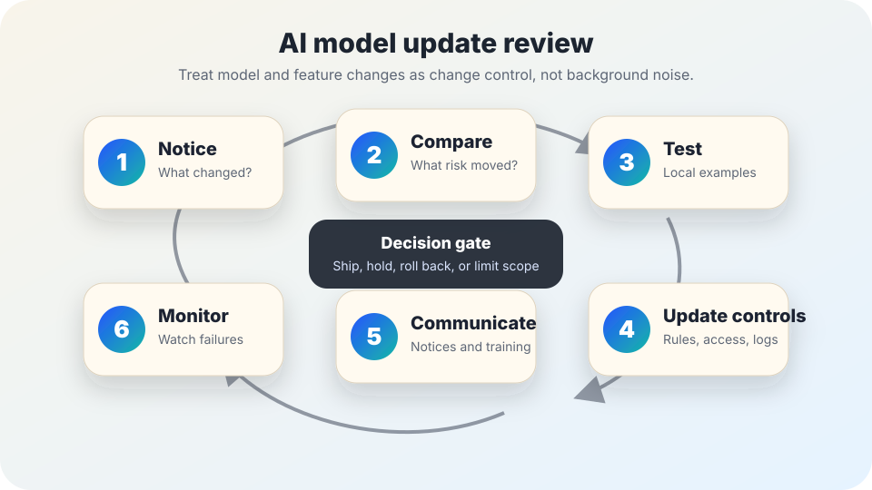

AI governance basics
AI model update review checklist.
A lightweight change-control checklist for checking whether a vendor model change, feature rollout, policy update, prompt change, or retention change affects risk, notices, testing, training, deletion, or monitoring.
The short answer
An AI model update review is a practical checkpoint that asks: what changed, who depends on it, what can fail differently now, what evidence says it still works locally, and what must be updated before people rely on it again.
It is not a full audit, a guarantee of safety, or a reason to delay every small patch. It is a way to keep AI risk from drifting silently when a model, vendor setting, prompt template, data connection, moderation rule, logging policy, or product feature changes.

Why model updates need review
AI systems are not only the model. They include data, prompts, tools, settings, people, vendor contracts, notices, safeguards, and the real-world workflow around the output. A model or feature update can improve quality while still changing error patterns, privacy exposure, accessibility, staff behavior, appeal needs, logging, cost, or public expectations.
NIST’s AI Risk Management Framework emphasizes governance, measurement, management, and lifecycle risk monitoring. NIST’s Generative AI Profile discusses risks such as confabulation, privacy exposure, data security, information integrity, and harmful output. OMB M-24-10 tells U.S. federal agencies to manage AI risks across use cases and governance processes. OWASP’s LLM guidance highlights application risks around prompts, outputs, supply chain, sensitive information, and agency/tool use. The ICO’s AI guidance links AI deployment to data protection duties, and CISA’s Secure by Design guidance encourages secure product and change practices.
1. Decide what triggers a review
- □ Vendor changes the model name, model version, default behavior, safety filters, tool-use capability, data retention setting, logging setting, training opt-in, or terms.
- □ Team changes the system prompt, retrieval source, approved use case, access group, integration, human review step, escalation path, or public notice.
- □ AI output begins affecting a higher-stakes decision than before: eligibility, discipline, benefits, employment, housing, health, education, safety, law, finance, or public services.
- □ Incident reports, appeals, user complaints, accessibility issues, hallucinated citations, privacy concerns, or bias concerns suggest the old review is stale.
Use a proportional review. A spelling fix in an internal prompt may need a quick log entry; a vendor model swap in a public-benefits workflow may need testing, notice updates, records review, and leadership approval.
2. Compare before and after
| Question | What to look for | Related field guide |
|---|---|---|
| What exactly changed? | Model, setting, prompt, data source, UI, tool permission, logging, retention, vendor policy, or workflow step. | Vendor disclosure checklist |
| Who is affected? | Users, staff, students, applicants, clients, residents, non-English speakers, disabled people, minors, or people named in uploaded records. | Accessibility review |
| What decisions could change? | Recommendations, rankings, flags, summaries, translations, eligibility cues, escalation paths, or staff confidence in output. | Evaluation evidence checklist |
| What data exposure could change? | New uploads, prompt retention, vendor review, training use, logs, exports, embeddings, or support attachments. | Data minimization checklist |
| What public promise could become inaccurate? | Notice language, consent language, deletion promises, retention schedules, appeal paths, human-review claims, or opt-out routes. | Public notice template |
3. Run local regression tests
- □ Re-test real examples from the approved use case, including easy cases, edge cases, past failure cases, and examples from appeals or incidents.
- □ Include examples that should trigger refusal, human review, citation checking, language-access review, accessibility accommodation, or stop rules.
- □ Compare outputs against the previous version when possible: accuracy, omissions, tone, uncertainty, citations, privacy handling, and escalation behavior.
- □ Record the test date, model or feature version, prompts/settings used, reviewer role, pass/fail criteria, and decision. Do not store unnecessary sensitive test data.
- □ If a test fails in a way that could affect people, hold rollout, narrow scope, add review, roll back, or escalate through the AI incident response guide.
4. Update controls, notices, and records
Controls
Update access, allowed uses, prompts, review gates, logging settings, approval roles, stop rules, and vendor settings.
Public communication
Refresh notices, consent language, user instructions, support scripts, appeal routes, and explanation text when promises changed.
Records
Check whether the retention schedule and deletion workflow still match the system’s behavior.
Training
Tell staff what changed, what not to assume, when to pause use, and where to report unexpected output.
5. Watch the first days after rollout
- □ Name an owner who checks early feedback, support tickets, appeals, incident reports, analytics, and staff questions.
- □ Set a review date after rollout. For higher-impact uses, do not wait for the annual review cycle.
- □ Track whether error types changed: more confident wrong answers, missing caveats, worse translations, inaccessible output, different refusals, or surprising tool actions.
- □ Keep a rollback or scope-limiting option ready if the update performs worse in the local context.
Bad signs
- Warning: The team learns about model changes only after users or staff report different behavior.
- Warning: Vendor release notes are treated as proof that the system remains safe for the local use case.
- Warning: Public notices, consent language, deletion promises, and staff training still describe the old system.
- Warning: The updated system has new tool permissions, data access, or memory features but no renewed access review.
- Warning: No one can name the version, test evidence, approval decision, rollback path, or monitoring owner.
Starter review language
For an internal change log: “This AI workflow changed on [date]. The change affected [model / feature / prompt / data source / setting / policy]. We compared the previous and new behavior using [test set or examples], checked privacy, retention, accessibility, notice, appeal, and staff-training impacts, and decided to [ship / hold / limit scope / roll back]. The monitoring owner is [role], with first review on [date].”
Adapt this to the organization’s risk tier, procurement terms, records policy, privacy duties, public-records obligations, security review, and human-review process.
Sources and further reading
- NIST — AI Risk Management Framework.
- NIST — Artificial Intelligence Risk Management Framework: Generative Artificial Intelligence Profile.
- U.S. Office of Management and Budget — M-24-10: Advancing Governance, Innovation, and Risk Management for Agency Use of Artificial Intelligence.
- OWASP — Top 10 for Large Language Model Applications.
- UK Information Commissioner’s Office — Artificial intelligence guidance.
- CISA — Secure by Design.